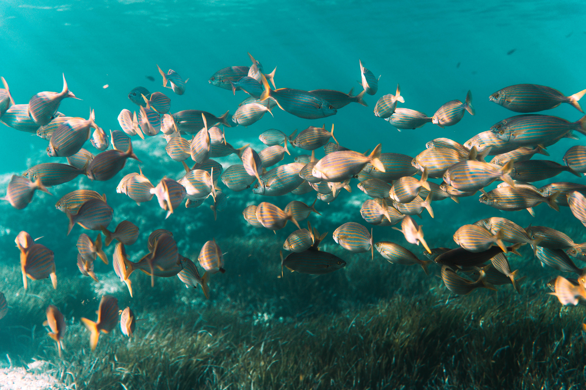

Sealens.art
Sealens is a photographic exhibition about the Mediterranean Sea, which invites you to explore the underwater landscapes and meet its inhabitants during a freedive.
Each dive tells a new story, delicately revealing the beauty and fragility of a world we never imagined. Let yourself be carried by the currents, observe with respect, and let the Mediterranean whisper its secrets.
Our project was born from a simple conviction: understanding is key to better protection.
Each image is a testimony, each view an invitation to become aware of the richness and vulnerability of our
maritime heritage.
It's an ode to the ocean, a visual journey that awakens as much as it amazes. Through our images, we seek to
capture the essence of a vibrant world, shaped by thousands of years of history.
Whether you're a seasoned diver or simply curious, Sealens invites you to immerse yourself in the magic of these hidden worlds. Together, let's imagine a future where harmony between man and the sea is not a dream, but a reality.